01 / THE PRODUCT
같은 로보택시 이야기,
애초에 파는 것이 다르다
웨이모는 무인 승차를 판다. 테슬라는 고객 차량에 운전 소프트웨어를 팔아 왔고, 여기에 직접 운영하는 승차 서비스를 더하고 있다.
이 차이를 놓치면 서비스 이름, 차량 이름, 소프트웨어 이름이 뒤섞인다. 영상의 첫 비교 슬라이드는 세 이름을 구분하는 데서 시작한다.
- Waymo One
- 앱으로 호출하는 웨이모의 무인 승차 서비스.
- Tesla robotaxi
- 테슬라가 직접 운영하는 승차 서비스. 영상에서는 소문자로 표기한다.
- Cybercab
- 그 서비스에 투입할 전용 차량. 서비스 자체의 이름이 아니다.
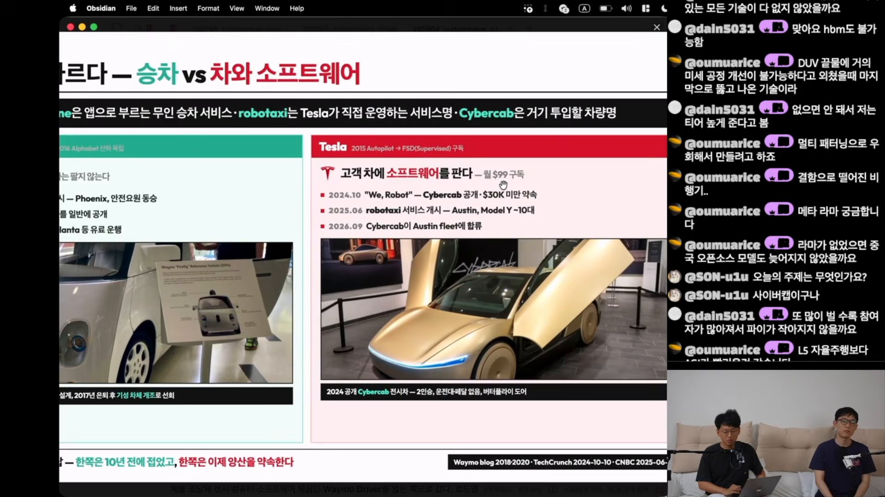
| 구분 | Waymo | Tesla |
|---|---|---|
| 사업의 중심 | 무인 승차 서비스. 고객에게 차를 판매하지 않는다. | 차량과 FSD(Supervised) 소프트웨어. 영상 기준 구독료 월 $99. |
| 출발과 전개 | 2009년 Google 프로젝트 → 2016년 Alphabet 산하 독립 → 2018년 Phoenix 상용 서비스 → 2020년 운전석 없는 일반 공개. | 2015년 Autopilot → 2024년 Cybercab 공개 → 2025년 Austin에서 Model Y 약 10대로 robotaxi 시작. |
| 전용 차량 | 2014년 운전대·페달 없는 Firefly 시제차. 2017년 은퇴 후 기성 차체 개조 방식으로 전환. | 2024년 공개한 Cybercab. 2인승, 운전대·페달 없음, 버터플라이 도어. |
| 2026년 9월 서술 | Phoenix·SF·LA·Austin·Atlanta 유료 운행을 소개. | Cybercab이 Austin 서비스 차량에 합류했다고 소개. |
샌프란시스코의 일상, 오스틴의 첫 배치
영상 속 샌프란시스코는 차량 종류가 섞이기 시작한 도시다. 슬라이드는 Bay Area에 Waymo 차량이 1,000대 이상 있으며, 회사 전체 Jaguar I-Pace 보유량을 약 3,700대로 적었다. Zeekr 기반 6세대 차량인 Ojai는 2026년 5월 테스트, 8월 19일 유료 운행으로 소개된다.
반면 Cybercab의 Austin 합류는 9월 3일 사건으로 제시된다. 영상 게시일인 9월 10일에서 일주일 전이다. 장면의 “사흘 전”이라는 표현은 게시일과 기준이 다르므로 절대 날짜로 읽는 편이 낫다. 초대장에 콘텐츠 크리에이터 제외 조건이 있었고 기자·라이브 스트리밍이 없었다는 설명도 노트에 담겼다.
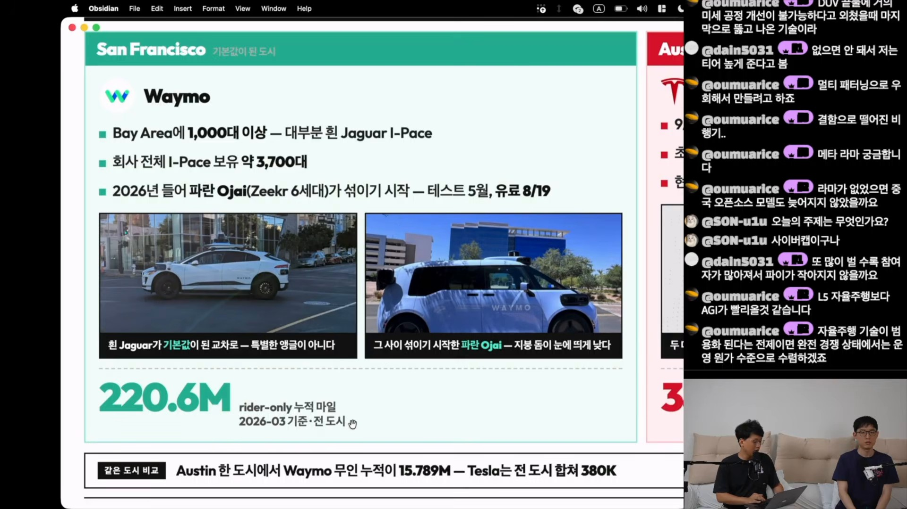
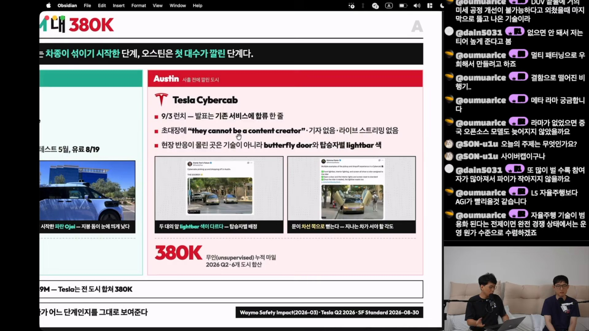
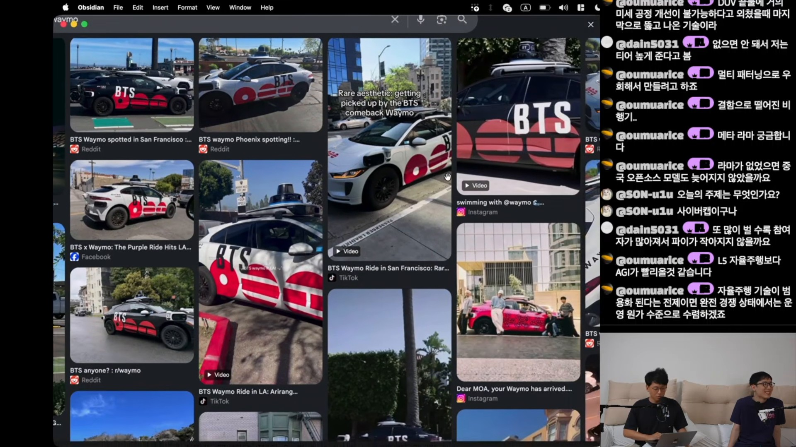
광고로 래핑된 Waymo 사진은 이 차이를 직관적으로 보여 준다. 진행자는 BTS 래핑 차량을 언급하며 로보택시가 일상적인 광고 매체로도 소비된다고 해석한다. 다만 몇 장의 소셜미디어 사진에서 시장 전체의 성숙도를 단정할 수는 없다.
02 / THE DENOMINATOR
120억 마일과 2억 마일을
그대로 비교할 수 없는 이유
영상에서 가장 유용한 사고 도구는 “분모”다. 누적 주행 거리는 그럴듯한 단일 숫자지만, 누가 운전을 책임졌는지, 어떤 조건에서 달렸는지를 지우면 숫자의 의미도 사라진다.
운전자 감독이 있는 주행
6개 도시 합산으로 제시
2026년 3월 · 전 도시
출처: 00:04:20 슬라이드 전사. 지표의 정의와 집계 기준일이 다르다. Tesla의 유료 robotaxi 누적 약 240만 마일은 별도 지표로 소개되며, 무인 38만 마일과 같지 않다.
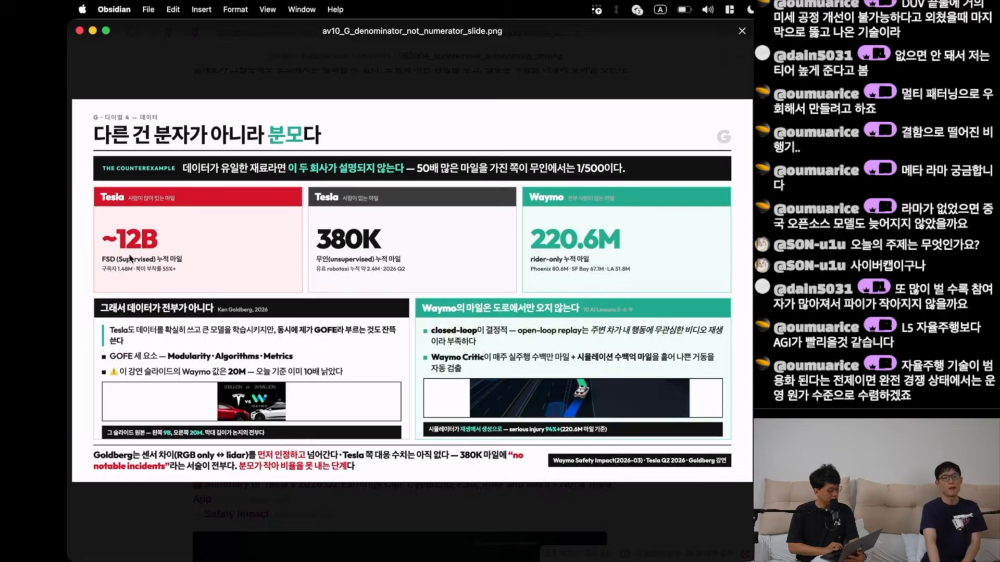
표의 숫자만 나누면 Tesla 감독형 주행은 Waymo rider-only 주행의 약 54배이고, Waymo rider-only 주행은 Tesla 무인 주행의 약 581배다. 영상의 “50배 대 1/500”은 규모를 압축한 표현이다. 이 비율은 주행 거리의 비교이지 기술력이나 안전성의 배수가 아니다.
Waymo의 220.6M 마일 중 슬라이드에 나열된 도시별 수치는 Phoenix 80.6M, SF Bay 67.1M, LA 51.8M이다. 세 도시 수치만으로 전 도시 합계가 완성되는 것은 아니다.
“사람이 잡고 있으니까 얼마나 사람이 개입했는지까지 알 순 없구나.”
영상 자막에 기록된 반응 · 발언자 실명은 제공 자료에서 확인되지 않음
도로 주행만이 학습의 재료는 아니다
슬라이드는 Ken Goldberg의 설명을 빌려 데이터 외에 모듈화, 알고리즘, 평가 지표가 중요하다고 덧붙인다. 영상에서 GOFE로 소개한 이 관점은 모델 규모와 데이터만으로 자율주행 시스템 전체를 설명하지 말자는 취지다.
Waymo의 10 AI Lessons를 인용한 대목에서는 closed-loop 시뮬레이션이 강조된다. 녹화된 주변 차량이 내 행동과 무관하게 움직이는 재생 방식과 달리, closed-loop 환경에서는 내 선택에 주변 환경도 반응한다. 슬라이드는 Waymo Critic이 매주 실주행 수백만 마일과 시뮬레이션 수백억 마일을 분석한다고 설명한다.
03 / THE ARCHITECTURE
지도를 준비하는 길과
차 안에서 계산하는 길
영상은 2015년 10월을 갈림길로 잡는다. 웨이모는 운전석을 비우고 시작해 도시를 늘렸고, 테슬라는 운전자를 앉히고 시작해 감독을 줄이는 방향으로 전개했다는 해석이다.
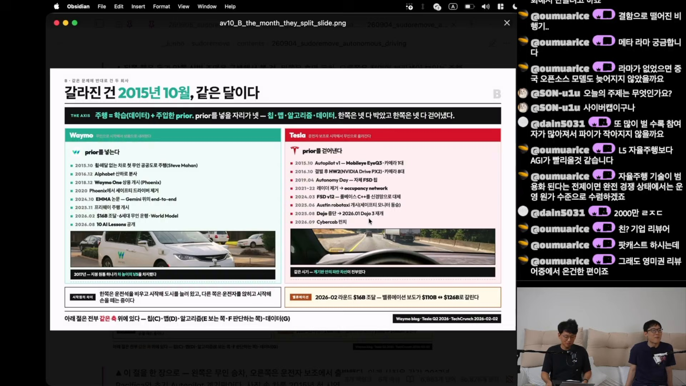
여기서 prior는 시스템에 미리 넣은 지식이나 구조를 뜻한다. 영상은 Waymo를 HD맵과 다중 센서 등 사전 구조를 적극 활용하는 쪽으로, Tesla를 영상 데이터와 학습·실시간 추론의 비중을 높이는 쪽으로 배치한다. “넷 다 넣었다 / 넷 다 걷어냈다”는 설명은 차이를 강조한 도식이며, 실제 시스템에 사전 가정이 전혀 없다는 뜻으로 읽어서는 안 된다.
Waymo의 경로
- 지도·다중 센서·운행 구역 준비
- 정해진 조건에서 무인 승차 운영
- 도시 확대와 센서 비용 절감
운영 가능한 영역을 확보하고 넓혀 가는 접근.
Tesla의 경로
- 고객 차량과 감독형 주행 데이터
- 학습 모델·차량 내 연산 확대
- 감독을 줄이며 무인 서비스 진입
영상 학습을 바탕으로 무인 운행까지 확장하는 접근.
센서를 덜어낸 비용은 어디로 이동하는가
슬라이드의 주장은 명확하다. 지도가 해 주던 일을 줄이면 그만큼의 일을 차 안에서 실시간으로 해결해야 한다. 영상은 이를 Tesla의 HW2 → HW3 → HW4 → AI5 변화와 연결한다. 다만 지도 의존도 하나만으로 칩 세대교체의 원인을 모두 설명할 수는 없다.
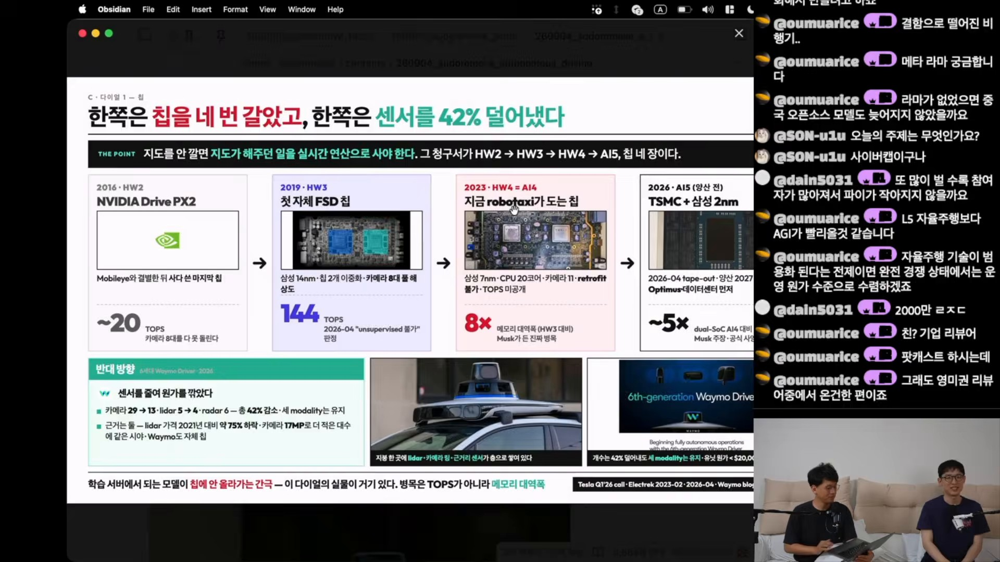
| 세대 | 칩·성능 표기 | 핵심 단서 |
|---|---|---|
| HW2 · 2016 | NVIDIA Drive PX2 · 약 20 TOPS | Mobileye와 결별 후 사용한 외부 칩. 카메라 8대 전체 처리에 제약이 있었다고 설명. |
| HW3 · 2019 | 자체 FSD 칩 · 삼성 14nm · 144 TOPS · 칩 2개 이중화 | 2026년 4월 무인 주행 불가 판정으로 서술. 해당 발언의 원문·대상 범위 확인 필요. |
| HW4 / AI4 · 2023 | 삼성 7nm · CPU 20코어 · 카메라 11 · TOPS 미공개 | HW3 대비 메모리 대역폭 8배, 기존 차량 retrofit 불가로 기재. |
| AI5 · 양산 전 | TSMC + 삼성 2nm · dual-SoC AI4 대비 약 5배 | 2026년 4월 tape-out, 2027년 양산 일정. Optimus·데이터센터 우선으로 설명. |
반대편의 Waymo 6세대는 카메라 29대에서 13대, lidar 5대에서 4대로 줄이되 카메라·lidar·radar의 세 종류를 유지했다고 소개된다. 슬라이드는 전체 센서 수 약 42% 감소, 17MP 카메라, 2021년 대비 lidar 가격 약 75% 하락, 유닛 원가 2만 달러 미만을 제시한다. 마지막 원가 수치는 무엇을 포함하는지 원출처 확인이 필요하다.
04 / MODELS & VALIDATION
모델은 합쳐져도,
안전 검증까지 사라지는가
자율주행의 변화는 센서 수에만 있지 않다. 영상은 사람이 정한 중간 표현과 모듈 경계를 학습으로 대체하는 흐름을 소개한다. Tesla의 FSD v12와 Waymo의 EMMA가 이 맥락에서 나란히 등장한다.
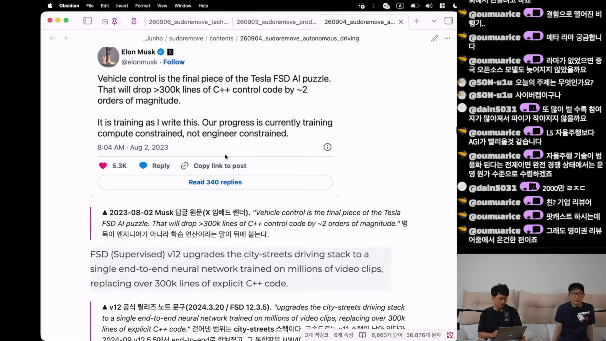
“C++ 30만 줄을 걷어냈다”는 말에서 중요한 것은 범위다. 노트가 병기한 FSD 12.3.5 릴리즈 문구는 도심 주행 스택(city-streets driving stack)을 수백만 영상 클립으로 학습한 하나의 신경망으로 바꿨다고 설명한다. 차량 소프트웨어 전체나 모든 안전 로직이 사라졌다는 뜻은 아니다.
인식에서 계획까지, 사람이 넣은 경계를 줄이는 흐름
| 단계 | 무엇을 표현하는가 | 영상의 해석 |
|---|---|---|
| Kalman filter ~2019 | 프레임별 검출을 시간축으로 결합해 물체의 움직임을 추적. | 관측과 기존 트랙을 연결하는 association이 중요한 문제. |
| BEV 2020–2022 | 카메라 이미지에서 위에서 본 공간 격자로 변환. LSS·BEVFormer를 예시로 제시. | 깊이 추정과 시간 정보를 학습해 공간 표현을 만든다. |
| Occupancy 2022~ | 물체의 이름보다 공간이 차 있는지를 예측. | 처음 보는 물체도 점유 공간으로 다룰 수 있다. |
| Planning 통합 2023~ | 인식·예측·계획을 주행 목표 아래 연결. UniAD와 driving VLA로 확장. | 사람이 나눈 모듈 경계를 줄이는 방향. |
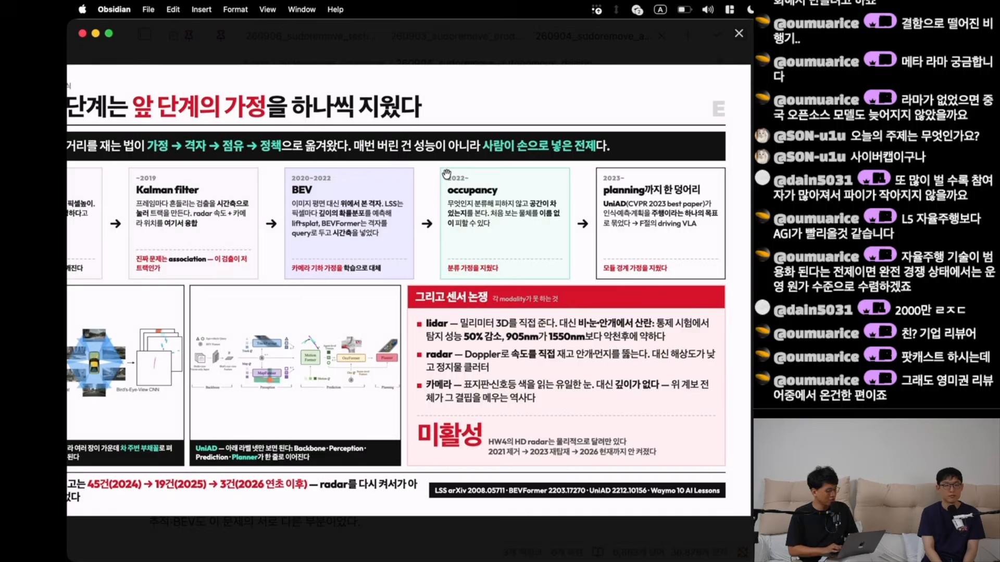
센서 비교도 단순한 우열이 아니다. 슬라이드는 lidar의 직접적인 3차원 거리 측정과 악천후 산란, radar의 속도 측정과 낮은 공간 해상도, 카메라의 풍부한 시각 정보와 깊이 추정 필요성을 대비한다. “lidar는 밀리미터 3D”, “악천후 탐지 성능 50% 감소” 같은 표현은 센서·시험 조건에 따라 달라질 수 있어 보편적 성능 수치로 인용하기 어렵다.
노트에는 Tesla가 lidar를 학습용 데이터 수집에 활용했다는 설명과, HW4의 HD radar가 물리적으로 있어도 활성화되지 않았다는 슬라이드 주장이 함께 담겨 있다. 센서 탑재, 학습 데이터 활용, 실제 주행 추론 사용은 서로 구분해야 한다. 레이더 제거와 팬텀 브레이킹, 재탑재의 인과관계 역시 자막의 설명만으로 확정할 수 없다.
EMMA 연구와 실제 Waymo 차량은 같은 범위가 아니다
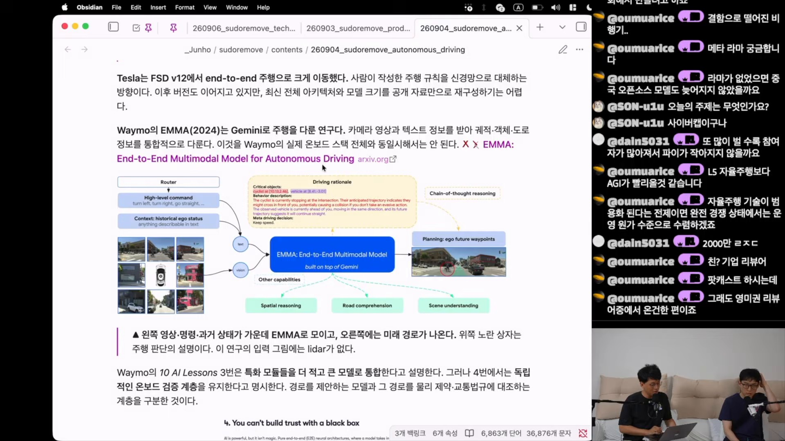
EMMA: End-to-End Multimodal Model for Autonomous Driving은 Gemini 위에 구축된 모델로 소개된다. 영상·텍스트와 과거 차량 상태를 받아 향후 경로점, 장면 이해, 주행 판단의 설명 등을 출력하는 구조다.
그렇다면 모델을 크게 바꿀 때 안전성은 어떻게 지키는가. 노트가 인용한 Waymo 10 AI Lessons는 더 적고 큰 모델로 통합하는 방향과 함께 독립적인 온보드 검증 계층을 유지한다고 설명한다. 경로를 제안하는 모델과 그 경로가 물리 제약·교통 규칙을 만족하는지 확인하는 기능을 구분하는 것이다. 이 설명만으로 개별 배포의 안전성이 입증되는 것은 아니지만, “통합 모델이면 별도 검증도 없다”는 추론은 피할 수 있다.
자막의 AlphaMaio·Cosmos 3 백본 관련 언급은 진행자의 추정으로 기록되어 있다. 이 글에서는 모델 구조가 확인된 사실로 사용하지 않았다.
05 / THE PRICE OF AUTONOMY
운전자가 없어졌는데,
왜 더 비쌀까
무인화는 비용 구조를 바꾼다. 그러나 승객이 내는 요금은 비용뿐 아니라 수요, 공급, 서비스 경험, 시장 진입 전략의 영향을 받는다.
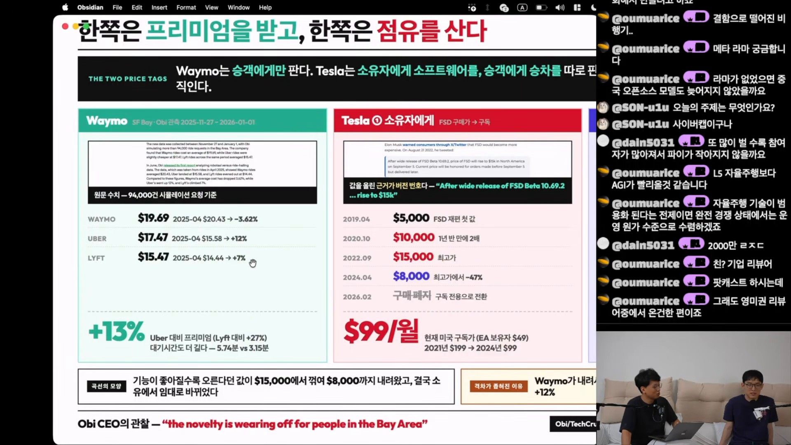
| 사업자 | 평균 요금 | 2025년 4월 값 | 변화 |
|---|---|---|---|
| Waymo | $19.69 | $20.43 | −3.62% |
| Uber | $17.47 | $15.58 | 약 +12% |
| Lyft | $15.47 | $14.44 | 약 +7% |
이 표에서 Waymo는 Uber보다 약 13%, Lyft보다 약 27% 비싸다. 대기시간도 5.74분 대 3.15분으로 더 길게 제시된다. 한편 요금 격차는 줄었다. Waymo의 소폭 인하와 Uber·Lyft의 인상이 함께 작용했으며, 경쟁사의 인상 폭이 더 컸다. “Waymo가 내려서가 아니라”라는 슬라이드 문구는 강조법이고, 표 자체에는 Waymo의 인하도 반영되어 있다.
진행자는 운전자가 없는 공간이 주는 편안함을 프리미엄의 이유로 해석한다. 민감한 통화를 하거나 타인의 음악 취향을 신경 쓰지 않아도 된다는 체험담이다. 이는 가능한 수요 설명이지만, 요금 관측만으로 선호의 원인이나 지불 의사를 입증한 것은 아니다.
Tesla에는 두 개의 요금표가 있다
소유자는 FSD 소프트웨어에 돈을 내고, 승객은 robotaxi 승차에 돈을 낸다. 영상은 소프트웨어의 구매 가격이 고점에서 내려와 구독으로 이동하는 동안, 초기 승차 요금은 오르는 흐름을 포착한다.
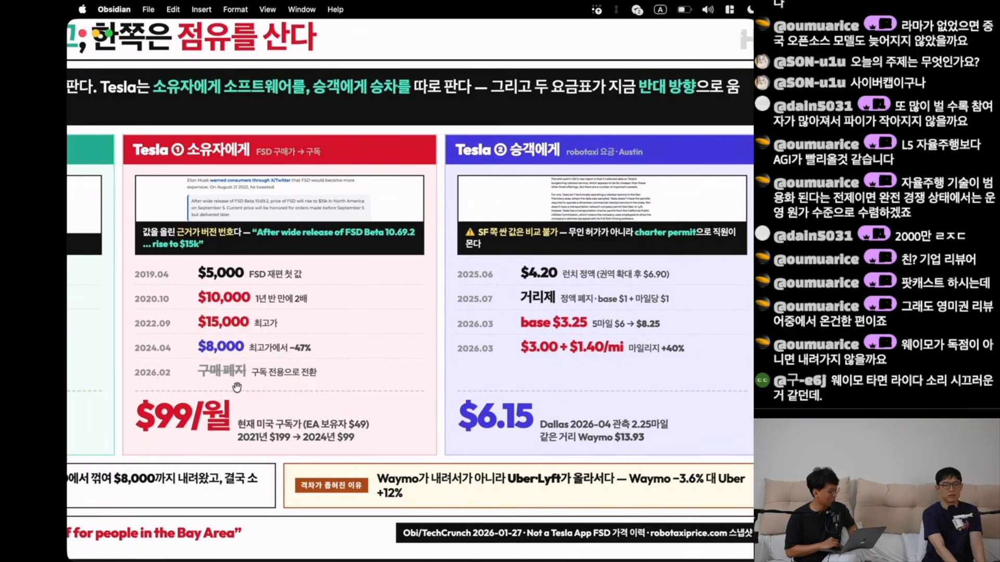
| 시점 | 가격·방식 | 변화 |
|---|---|---|
| 2019.04 | $5,000 | FSD 재편 후 가격 |
| 2020.10 | $10,000 | 약 1년 반 만에 두 배 |
| 2022.09 | $15,000 | 슬라이드상 최고가 |
| 2024.04 | $8,000 | 최고가 대비 약 47% 하락 |
| 2026.02 | 구독 전용 전환 | 월 $99, EA 보유자는 $49로 기재 |
별도의 월 구독료는 2021년 $199에서 2024년 $99로 내려갔다고 소개된다. 지역·구매 이력별 적용 조건은 원출처 확인 대상이다.
| 시점 | 요금 | 메모 |
|---|---|---|
| 2025.06 | $4.20 정액 | 권역 확대 후 $6.90 |
| 2025.07 | 기본 $1 + 마일당 $1 | 정액에서 거리제로 전환 |
| 2026.03 · 표기 A | 기본 $3.25 | 5마일 요금 $6 → $8.25로 제시 |
| 2026.03 · 표기 B | 기본 $3 + 마일당 $1.40 | 마일당 요금 40% 인상으로 설명 |
수익 자산이라는 가설에는 비용표가 빠져 있다
영상은 주 60시간, 시간당 20달러, 연 52주를 가정해 소유 차량의 수익 가능성을 이야기한다. 이 가정의 단순 곱은 연 62,400달러의 매출이다. 노트의 “연 3천만 원” 환산은 환율이나 추가 가정이 없어 같은 계산으로 재현되지 않는다.
이 금액은 순이익도 아니다. 충전, 보험, 청소, 정비, 플랫폼 수수료, 감가상각과 실제 유상 운행 시간을 반영해야 한다. 그 비용과 가동률 없이 차량 가격이 크게 올라갈 것이라는 결론까지 연결하기는 어렵다.
06 / THE PROMISE
사이버캡이 달리는 것과
내가 살 수 있는 것은 다르다
영상이 소개하는 MKBHD의 삭발 내기는 이 차이를 겨냥한다. 노트에 따르면 그는 2024년 발표를 “운전대와 페달이 없는 2인승 Cybercab을 일반인이 3만 달러에, 2026년 말까지 살 수 있다”는 약속으로 받아들였다.
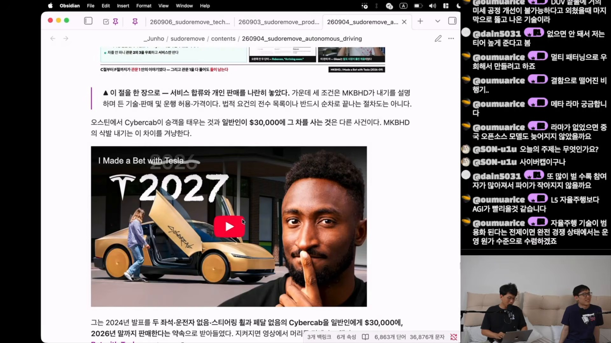
판단할 조건은 세 가지다. 차량이 약속한 기능을 수행하는가, 일반 소비자에게 판매하고 운행할 수 있는가, 약속된 가격에 공급되는가. 이 구분은 법적 요건의 전수 목록이나 반드시 순서대로 거쳐야 하는 절차도는 아니다. 다만 제한된 서비스 구역에 몇 대를 투입한 사건을 소비자 판매 약속의 완료로 볼 수 없는 이유는 분명하게 보여 준다.
“오스틴에서 Cybercab이 승객을 태우는 것과 일반인이 $30,000에 그 차를 사는 것은 다른 사건이다.”
제공된 영상 노트의 정리
기술 성취와 일정 이행은 따로 평가해야 한다
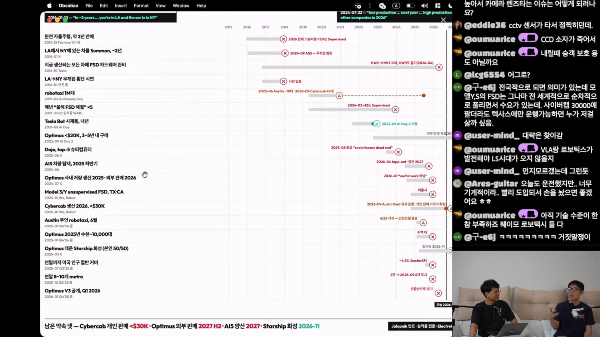
| 약속·발표 시점 | 영상의 분류 | 슬라이드가 든 결과 |
|---|---|---|
| 약 2년 안에 완전 자율주행 · 2015.12 | 미이행 | 소유자용 FSD는 여전히 Supervised. |
| LA에서 NY의 차를 호출 · 2016.01 | 미이행 | 2024년 ASS는 주차장 범위. |
| 생산 차량의 FSD 하드웨어 완비 · 2016.10 | 미이행 | HW2 → HW3 교체, HW3도 무인화 불가로 서술. |
| LA → NY 무개입 횡단 시연 · 2016.10 | 미이행 | 해당 시연이 없었다고 정리. |
| 로보택시 100만 대 · 2019.04 | 부분 | 2025년 Austin 약 10대, 2026년 9월 Cybercab 45대로 기재. |
| “올해 FSD 해결” 반복 · 2019–2023 | 미이행 | 2024년 v12도 Supervised. |
| 이듬해 Tesla Bot 시제품 · 2021.08 | 이행 | 2022년 9월 AI Day 2 보행 시연. |
| Dojo, 세계 5위권 슈퍼컴퓨터 · 2023.06 | 미이행 | 2025년 8월 종료로 정리. 다른 연표에는 2026년 Dojo 3 재개도 등장. |
| AI5 차량 탑재, 2025년 하반기 · 2024.06 | 미이행 | 2026년 tape-out, 2027년 양산 일정. |
| Cybercab 2026년 생산, 3만 달러 미만 · 2024.10 | 부분 | Austin 유료 운행. 개인 판매·가격 미확정. |
| 연말 미국 인구 절반 커버 · 2025.07 | 미이행 | Austin·SF 약 4.5%로 제시. |
| 연말 8–10개 대도시권 · 2025.10 | 미이행 | 연말 2곳, 2026년 9월 6개 도시로 기재. |
이 표에서 곧바로 하나의 “약속 이행률”을 계산하는 것은 적절하지 않다. 반복 발언을 묶은 행이 있고, 부분 이행의 기준도 균일하지 않으며, 원래 기한을 넘긴 진전과 기한 내 달성을 혼합한다. 예를 들어 로보택시 소수 운영을 100만 대 약속의 “부분”으로 분류한 것은 제작자의 평가다.
진행자들은 반복된 일정 미준수를 강하게 비판하면서도 Tesla와 SpaceX가 이룬 성취 자체는 인정한다. 독자가 가져갈 구분도 여기에 있다. 어려운 기술을 진전시켰는가와 구체적인 약속을 제때 지켰는가는 서로 다른 질문이다.
슬라이드의 후속 관찰 목록에는 Cybercab 개인 판매·3만 달러 미만 가격, Optimus 외부 판매 2027년 하반기, AI5 양산 2027년, Starship 화성 관련 2026년 11월 약속이 제시된다. 이 중 자율주행 밖의 항목은 이 글의 분석 범위에 포함하지 않는다.
07 / WHAT TO WATCH NEXT
다음 뉴스에서 확인할 것은
더 큰 숫자보다 더 명확한 조건
영상은 “정반대의 기술 철학도 작동할 수 있다”는 감상으로 두 회사를 바라본다. 다만 작동한다는 말의 범위는 나눠야 한다. 감독형 운전 보조, 제한 구역 무인 승차, 개인이 소유한 차량의 광범위한 무인 운행은 같은 성취가 아니다.
소유에서 서비스로, 그러나 운행 범위가 관건
차량을 소유하는 대신 필요할 때 이동 서비스를 이용하는 방식이 더 대중화될 수 있다는 전망이 나온다. 이를 가르는 것은 차체 가격만이 아니다. 호출 가능한 장소와 시간, 대기시간, 운임, 실제 이용 가능성이 중요하다.
영상 채팅의 “3만 달러에 사더라도 텍사스에서만 운행할 수 있으면 누가 살까”라는 질문은 개인 판매의 실용성을 짚는다. 다만 특정 지역에 묶인 운행이 규제 때문인지, 기술·지도·운영 준비 때문인지는 제공 자료로 분리되지 않는다. 영상의 규제 관련 대화는 법적 검토가 아닌 논의로 읽어야 한다.
운전 학습 부담과 주차 자동화에 관한 대화도 같은 맥락이다. 소비자가 원하는 가치는 종종 거대한 자율주행 선언보다 “내린 뒤 알아서 주차하고, 부르면 오는 차”처럼 구체적이다. 중국 업체와 다른 사업자에 관한 언급은 경쟁 구도가 넓어질 가능성을 제기하지만, 해당 업체의 현황과 성능을 비교할 자료는 이 노트에 충분하지 않다.
독자를 위한 확인 체크리스트
- 무인이라는 말의 조건: 운전자·안전요원 탑승 여부, 원격 지원의 역할, 운행 가능 구역과 시간을 확인한다.
- 주행 거리의 정의: 감독형·무인·유료 승차·시뮬레이션을 구분하고, 집계 종료일을 함께 적는다.
- 안전 수치의 비교 기준: 사고 정의, 심각도, 주행 환경, 비교군과 통계적 불확실성을 확인한다.
- 요금과 수익의 차이: 같은 도시·경로·시간 조건의 가격인지 확인하고, 저렴한 요금을 낮은 원가나 흑자의 증거로 쓰지 않는다.
- 출시의 완료 조건: 시연, 서비스 투입, 양산, 일반 판매, 가격 확정을 별개의 사건으로 기록한다.
The Takeaway
누가 더 많이 달렸는가.
그 전에, 어떤 조건에서 달렸는가.
자율주행 경쟁을 읽는 가장 좋은 출발점은 숫자의 단위를 되찾는 일이다. 운전석을 비운 범위, 승객이 지불한 가격, 소비자가 실제로 살 수 있는 상품을 구분하면 발표의 크기와 현실의 진전이 함께 보인다.
08 / SOURCE NOTES
출처, 자료의 성격, 남은 확인
이 글은 제공된 Obsidian 노트를 바탕으로 구성한 영상 분석 기사다. 수치와 기업 현황을 독립적으로 조사한 보고서가 아니며, 이미지 역시 제공된 프레임 경로를 유지했다.
-
기본 자료 영상·자막 기반
sudoremove, 「자율주행 근황, 테슬라 사이버 캡 출시 vs 웨이모」, 2026년 9월 10일 게시, 29분 6초. 제공 노트는 수동 자막 801개 큐, 메타데이터·설명란·26개 챕터를 활용했다고 명시한다. 출연자 실명은 확인되지 않아 특정하지 않았다. -
프레임과 슬라이드 화면 전사
노트 작성자는 화면 공유 구간 23곳에서 중복되지 않는 14개 프레임을 선별했다고 설명한다. 화면 자료는 진행자가 Obsidian으로 만든 자체 슬라이드다. 이 글의 기업별 수치·일정·상태 표시는 그 슬라이드를 옮긴 노트에 근거한다. -
기업 이력·기술·안전 관련 각주 원문 미대조
슬라이드는 Waymo blog(2018·2020), TechCrunch(2024-10-10), CNBC(2025-06-20), Waymo의 10 AI Lessons(2026-08), EMMA 논문, Ken Goldberg의 2026년 강연 등을 인용한다. 정확한 기사·발표 제목과 통계 정의를 원문에서 확인해야 한다. Goldberg 강연의 Waymo 20M 마일과 영상의 220.6M 마일은 기준 시점이 다르다. -
후속 기술 독서 노트에 제시된 논문 식별자
LSS · arXiv:2008.05711, BEVFormer · arXiv:2203.17270, UniAD · arXiv:2212.10156. 링크는 제공 노트의 식별자를 따른다. 이 글에서는 논문 본문을 대조해 개별 기술 주장을 검증하지 않았다. -
가격·약속 연표의 근거 2차 인용
Obi/TechCrunch 요금 분석, robotaxiprice.com 스냅샷, Jalopnik 연표, 실적콜 전문, Electrek 등이 슬라이드 각주로 소개된다. 요금의 지역·시간 조건, 약속의 정확한 발언과 기한, 하드웨어 적용 범위를 추가 확인해야 한다. Waymo의 2026년 2월 조달 관련 기업가치도 노트에서 $110B와 $126B 보도가 갈린다고 명시한다.